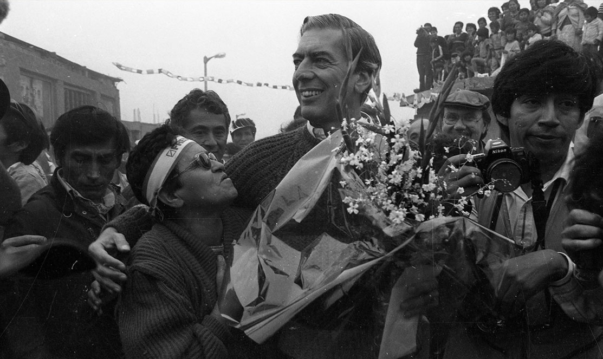
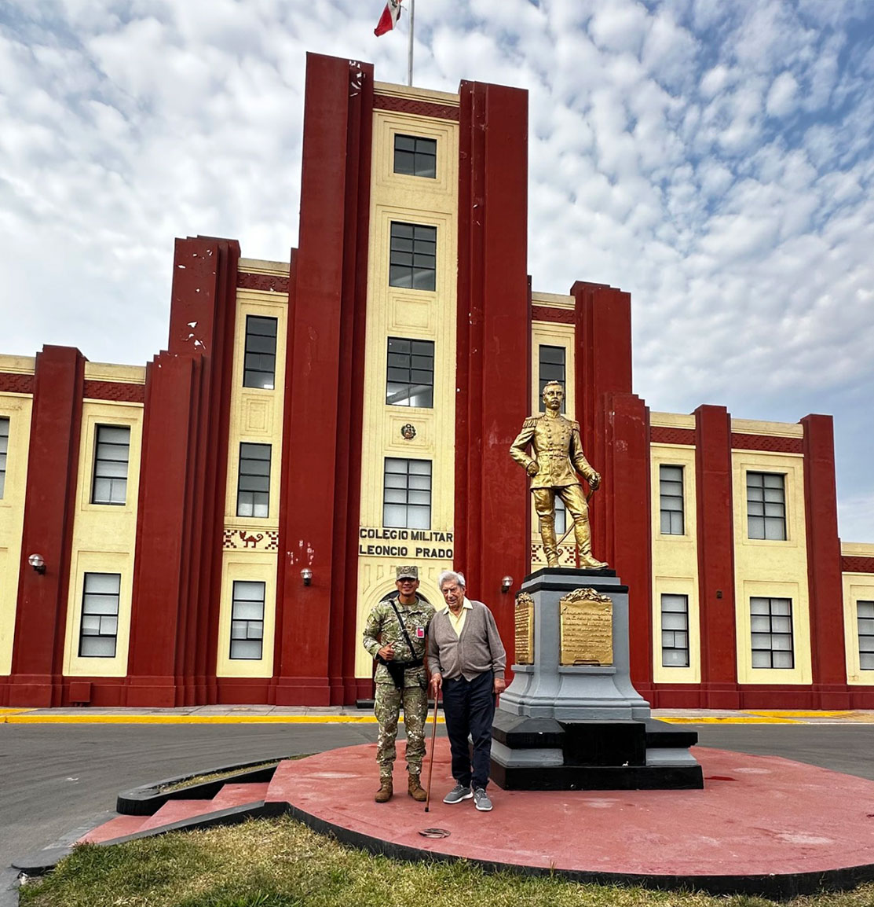
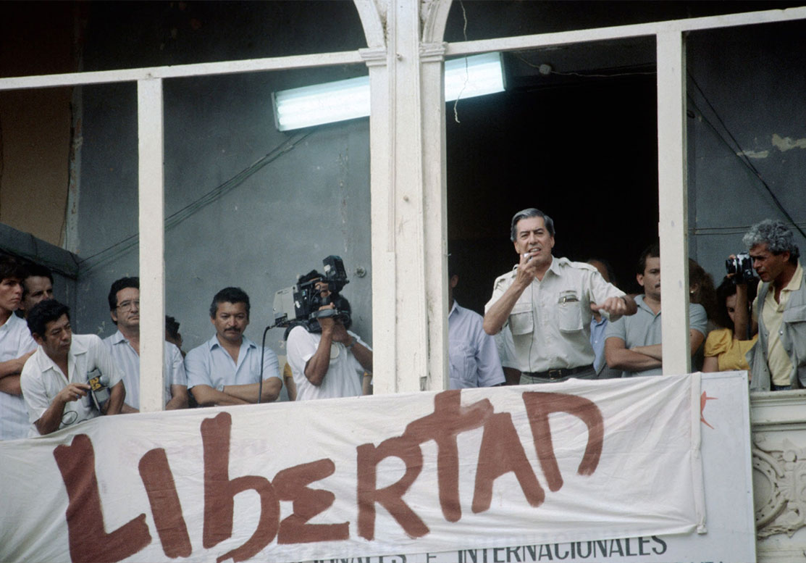
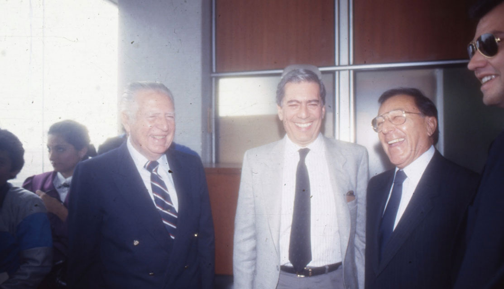
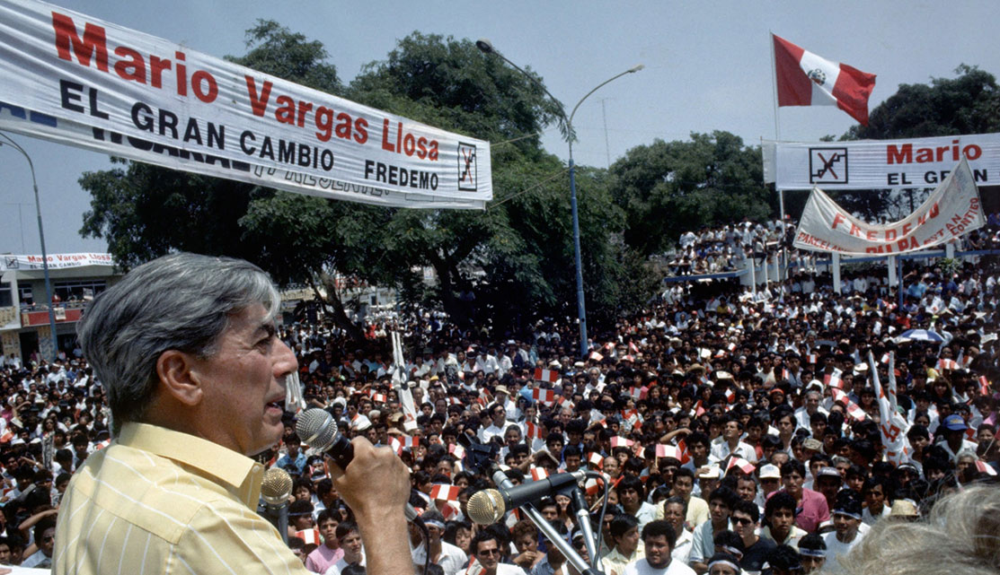

Desde su génesis, la poiesis de Mario Vargas Llosa, su proyecto narrativo, abordó las políticas del poder. En particular, las del Perú de mediados del siglo XX, donde están ambientados sus primeros cuentos y novelas. De hecho, cuando ganó el Nobel de Literatura, lo hizo por “su cartografía de las estructuras de poder y su mordaz retrato de la resistencia individual, la sublevación y la derrota". En correlato, su biografía evidencia una larga y mutante relación con la herramienta con la que se ejerce el poder: la política, propiamente dicha.

Mario Vargas Llosa durante una actividad electoral en Huaycán, como parte deu su campaña presidencial de 1990. Foto: El Comercio
Su estancia en el colegio militar le demostraría que el Perú era "una sociedad muy distinta de aquella, pequeñita, delimitada por las fronteras de la clase media, en la que hasta entonces viví”.
Según narró Vargas Llosa en su libro de memorias, El pez en el agua (1993), fue durante su infancia en Piura cuando comenzó a sentir “los ramalazos de la vida cívica”. Por entonces, el presidente era José Luis Bustamante y Rivero, primo de su abuelo Pedro Llosa, prefecto de la ciudad norteña. “Los malos eran los apristas, que habían traicionado al tío José Luis y le estaban haciendo la vida imposible allá en Lima”, escribió. “Las batallas callejeras entre apristas, urristas (del Partido Unión Revolucionaria) y socialistas eran frecuentes”.
El golpe de Manuel Odría contra Bustamante en 1948 lo encontró en Lima, a donde se había mudado luego de que su padre y su madre retomaron su relación. Según cuenta, su padre celebró el golpe ante “la cara tristona” de su madre. Dos décadas después, el régimen odriísta sirvió como escenario de una de sus obras maestras: Conversación en la catedral (1969). También fue por esos años que ingresó al colegio militar Leoncio Prado, por orden de su padre. Su estancia inspiraría luego su primera novela: La ciudad y los perros (1963).
Su estancia en el colegio militar le demostraría que el Perú era "una sociedad muy distinta de aquella, pequeñita, delimitada por las fronteras de la clase media, en la que hasta entonces viví”. Pero la “inquietud” por la política entraría en su vida en 1952, cuando organizó una frustrada huelga escolar contra la decisión del director de su colegio en Piura de tomarles exámenes sino de improviso. “En ese año piurano la política entró en mi vida al galope y con el idealismo y la confusión con que suele irrumpir en un joven”, contó.

Mario Vargas Llosa de visita en el Colegio Leoncio Prado en noviembre del 2024, 74 años después de haber ingresado por primera vez a sus aulas. Foto: Cuenta de X de Álvaro Vargas Llosa
Vargas Llosa se fue a Europa en 1958, donde sería parte del fenómeno editorial del 'Boom Latinoamericano’.
Fue allí que tomo conciencia de de que “el Perú era un país de feroces contrastes, de millones de gentes pobres y de apenas un puñado de peruanos que vivían de manera confortable y decente, y de que los pobres —indios, cholos y negros— eran, además de explotados, despreciados por los ricos, gran parte de los cuales eran «blancos»”. También se convenció de que “aquella injusticia debía cambiar y que ese cambio pasaba por eso que se llamaba la izquierda, el socialismo, la revolución”. En ese contexto, postuló e ingresó a San Marcos.
Vargas Llosa inició sus estudios en La Decana, entonces alojada en la histórica casona del Parque Universitario, en 1953, todavía bajo la dictadura de Odría. Allí se sumó al grupo Cahuide, “nombre con el que trataba de reconstruirse en la clandestinidad el Partido Comunista”. Su primer instructor sería Héctor Béjar, futuro guerrillero y, más recientemente, canciller de Pedro Castillo. Eventualmente, para la militancia, tomaría el nombre de “camarada Alberto”. Desde allí, nuevamente, tuvo como rival político al Partido Aprista.
Su militancia duró “un año y pico”, en que sus “proezas revolucionarias fueron escasas”. Se alejó del grupo “aburrido por la inanidad de lo que hacíamos” y desilusionado de los dogmas marxistas. “Había en mi manera de ser —en mi individualismo, en mi creciente vocación por escribir y en mi naturaleza díscola— una incapacidad visceral para ser ese militante revolucionario paciente, incansable, dócil, esclavo de la organización”. No obstante, aún se identificaba con la izquierda y se oponía a la dictadura odriísta, que cayó en 1956.

Mario Vargas Llosa durante un mitin previo a las elecciones de 1990, como líder del Movimiento Libertad y la alianza Fredemo. Foto: Archivo El Comercio
Ya en los años ochenta, la postura política de Vargas Llosa había abrazado el liberalismo social y económico.
Para 1956, las primeras elecciones democráticas tras el ochenio de Odría, trabajó escribiendo discursos para el candidato Hernando de Lavalle, de la Unidad Nacional y Convivencia Democrática. Lo hizo junto al historiador Pablo Macera y por intermedio de Raúl Porras Barrenechea, uno de sus mentores en San Marcos. Esa elecciones serían ganadas por Manuel Prado Ugarteche, pero también llevaron que Porras Barrenechea sea elegido para el Senado y a que le dé un puesto de trabajo allí. Sí, Vargas Llosa fue trabajador del Congreso.
Así lo cuenta el novelista: “El cargo era teórico, porque, como ayudantes de Porras, seguíamos trabajando con él en su casa, en la investigación histórica, y sólo pasábamos por el Congreso los fines de mes, a cobrar el modesto salario. A los seis meses, Porras nos advirtió a Carlos Araníbar y a mí que nuestros cargos habían sido suprimidos. Ese medio año fue mi primera y última experiencia de funcionario público”. Luego, en su etapa como periodista en Radio Panamericana, el escritor dirigió un espacio dedicado a cubrir el Congreso.
Vargas Llosa se fue a Europa en 1958, donde sería parte del fenómeno editorial del 'Boom Latinoamericano’. Desde allí, como la mayoría de intelectuales de la época, miró con admiración la revolución cubana y los primeros años del castrismo. Incluso visitó la isla y fue jurado del Premio Casas de las Américas en 1965. Pero la admiración se convirtió pronto en decepción y luego en oposición: el punto de quiebre fue el encarcelamiento del poeta cubano Herbeto Padilla en 1967, que marcaría su distanciamiento del régimen cubano.
A nivel de la política peruana, reveló que votó por Fernando Belaunde en 1962, 1963 y 1980. Sobre la dictadura militar, envió una carta abierta en 1975 a Juan Velasco por el cierre de la revista Caretas, donde “con la misma firmeza que he aplaudido todas las reformas revolucionarias”, rechazó la “política autoritaria” de expropiación de medios de comunicación. Luego, en el Pez en el Agua, afirmó que las reformas velasquistas convirtieron "al pobre país que era entonces el Perú en el pobrísimo" que era a inicios de los noventa.

Fernando Belaunde Terry, Mario Vargas Llosa y Luis Bedoya Reyes, líderes de la alianza Fredemo, durante una conferencia en 1988. Foto: Archivo El Comercio
En sus memorias, Vargas Llosa da dos motivos centrales para su decisión de entrar en política: el gusto por vivir una aventura y una “obligación moral” de conducir al Perú a una “modernización” luego del fracaso de políticas estatistas.
Ya en los años ochenta, la postura política de Vargas Llosa había abrazado el liberalismo social y económico. Un factor detrás de este cambio fue su interés por asuntos económicos luego de su “desencanto con el marxismo y el socialismo”. Aun así, el escritor aún no se animaba a dar el salto directo a la política. Según contó, en esa misma década rechazó ofertas del presidente Belaunde para ser primer ministro, canciller, ministro de Educación, embajador en el Reino Unido y en Estados Unidos y para postular a la presidencia en 1985.
Todo cambió en julio de 1987. El anuncio de Alan García de su intención de estatizar la banca se convirtió en el punto de partida para el episodio más importante de su vida política: su candidatura presidencial. Su oposición a ese anuncio se plasmó días después, el 2 de agosto, en un artículo para El Comercio titulado “Hacia el Perú Totalitario”. “Lo hice para que quedara constancia de mi rechazo, pero convencido de que no serviría". Sin embargo, su postura encontró un rápido respaldo y tuvo eco en distintos actores sociales.
El 21 de agosto de ese año, el escritor lideró el ‘Encuentro por la Libertad’ en la Plaza San Martín. Para Vargas Llosa, esa masiva manifestación fue el factor decisivo para que el intento de estatización fracase, “abrió las puertas de la vida política peruana a un pensamiento liberal que hasta entonces carecía de presencia pública”y “echó las bases” para su candidatura presidencial y para el Movimiento Libertad. Su mensaje central fue que “no se sale de la pobreza redistribuyendo lo poco que existe sino creando más riqueza”.
En sus memorias, Vargas Llosa da dos motivos centrales para su decisión de entrar en política: el gusto por vivir una aventura y una “obligación moral” de conducir al Perú a una “modernización” luego del fracaso de políticas estatistas. Para ello, se alió con el PPC y Acción Popular, y con sus respectivos líderes: Luis Bedoya y Fernando Belaunde. No obstante, luego concluyó que esa unión con dos partidos tradicionales fue un error. “La mala imagen de los viejos políticos se puede borrar con un plan de reformas profundas", dijo.
Si bien era el favorito, terminó siendo derrotado por un entonces desconocido Alberto Fujimori. En sus memorias, el novelista atribuye su derrota a varios factores”. “Tuve mucha responsabilidad en el fracaso, por centrar toda la campaña en la defensa de un programa de gobierno, descuidar los aspectos exclusivamente políticos, denotar intransigencia y mantener, de principio a fin, una transparencia de propósitos que me volvió vulnerable a los ataques y a las operaciones de descrédito y que asustó a muchos de mis iniciales partidarios”.

Mario Vargas llosa durante un mitín del Fredemo en la campaña presidencial de 1990.
Foto: Archivo El Comercio
A lo largo de ‘El pez en el agua’, Vargas Llosa también señala otros factores en su derrota: la inexperiencia política de sus partidarios, la falta de coherencia en su alianza electoral, la excesiva publicidad de sus candidatos al Congreso y la férrea oposición de la izquierda y el Apra, entonces partido de gobierno. De esos años, el novelista concluyó que la política consiste “casi exclusivamente de maniobras, intrigas, conspiraciones, pactos, paranoias, traiciones, mucho cálculo, no poco cinismo y toda clase de malabares”.
Vargas Llosa también cuenta que pensó renunciar a su candidatura luego de los resultados de la primera vuelta, que lo obligaba a ir una segunda vuelta con Alberto Fujimori. Incluso cuenta que se reunió con él en su casa para comunicarle su decisión. Finalmente, tras largas conversaciones con su círculo más cercano y una visita del cardenal Augusto Vargas Alzamora, retrocedió y decidió seguir adelante con su campaña. “Mi renuncia, además de crear un impasse constitucional que podía servir de coartada para un golpe de estado”, dijo.
Pese a los cambios en su campaña para la segunda vuelta, el candidato no pudo cambiar el resultado que él mismo había anticipado. El 10 de junio, Alberto Fujimori ganó la segunda vuelta con el 62% de los votos frente al 37% de Vargas Llosa. Si bien siguió siendo la principal figura intelectual del Perú y sus opiniones políticas tuvieron peso y difusión durante el régimen fujimorista (que terminaría aplicando su plan económico) y en todas las elecciones presidenciales posteriores, luego de ese día el Vargas Llosa político se jubiló.
“Sólo un grupito de amigos del Movimiento Libertad y de Acción Solidaria se averiguaron la hora de nuestra partida y aparecieron al pie del avión en que Patricia y yo nos embarcamos a Europa, la mañana del 13 de junio de 1990. Cuando el aparato emprendió vuelo (...) nos quedamos rodeados sólo de cielo azul, pensé que esta partida se parecía a la de 1958, que había marcado de manera tan nítida el fin de una etapa de mi vida y el inicio de otra, en la que la literatura pasó a ocupar el lugar central”, contó Vargas Llosa.